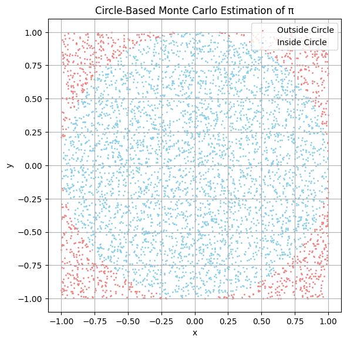
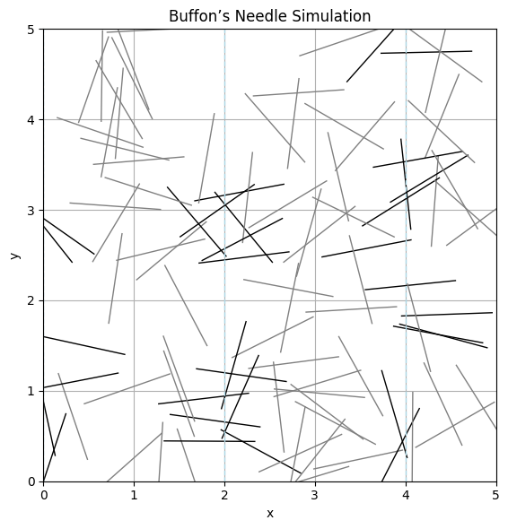

Problem 2
Estimating \( \pi \) Using Monte Carlo Methods
Motivation
The number \( \pi \) is one of the most important constants in mathematics, appearing in geometry, calculus, physics, engineering, and probability. While it is typically calculated using analytical or series methods, it can also be estimated using randomness via Monte Carlo simulations.
Monte Carlo methods use repeated random sampling to obtain numerical estimates. One particularly elegant application is the estimation of \( \pi \) through:
- Geometric probability: simulating random points inside a square and counting how many fall within an inscribed circle.
- Buffon’s Needle: a probability problem from the 18th century involving the likelihood that a needle crosses lines on a floor.
These approaches demonstrate how randomness can approximate precise mathematical values and give us insights into convergence, error, and simulation design.
Part 1: Estimating \( \pi \) Using a Circle
Theoretical Foundation
Imagine a unit circle (radius \( r = 1 \)) inscribed within a square of side length 2 (from \(-1\) to \(1\) along both axes).
The area of the square is: $$ A_{\text{square}} = (2r)^2 = 4 $$
The area of the circle is: $$ A_{\text{circle}} = \pi r^2 = \pi $$
The ratio of the circle's area to the square’s area is: $$ \frac{A_{\text{circle}}}{A_{\text{square}}} = \frac{\pi}{4} $$
So, if we generate random points uniformly in the square and count the fraction that fall inside the circle (i.e., satisfy \( x^2 + y^2 \leq 1 \)), we can estimate \( \pi \) by:
Simulation Steps
- Generate \( N \) random points in the square \([-1, 1] \times [-1, 1]\)
- Count how many fall inside the unit circle
- Apply the formula above to estimate \( \pi \)
-----
What is The Monte Carlo Method
The Monte Carlo method is a numerical approach that uses random sampling to solve mathematical problems that may be deterministic or probabilistic in nature.
Basic Principle
To estimate a quantity \( Q \), perform many random experiments and take the average result:
Where: - \( N \): number of random samples - \( x_i \): randomly sampled inputs - \( f(x_i) \): the function evaluated at \( x_i \)
Example: Estimating \( \pi \)
- Generate \( N \) random points in the unit square \([0, 1] \times [0, 1]\)
- Count how many fall inside the quarter-circle of radius 1:
- Then approximate \( \pi \) as:
Applications
- Physics: Particle transport, statistical mechanics
- Finance: Option pricing, risk analysis
- Engineering: Reliability simulations
- Mathematics: Multidimensional integrals
Key Advantages
- Handles high-dimensional problems
- Easy to implement
- Scales well with computational power
Limitations
- Convergence is slow (\( \propto \frac{1}{\sqrt{N}} \))
- Needs a large number of samples for high accuracy
Visualization
We can visualize this method by plotting: - Points inside the circle (where \( x^2 + y^2 \leq 1 \)) - Points outside the circle but within the square 
Convergence Analysis
By increasing the number of points, we should observe: - The estimate converges closer to the true value of \( \pi \) - The variance of estimates decreases
Theoretically, the standard error of this method decreases as:

Part 2: Estimating \( \pi \) Using Buffon’s Needle
Theoretical Foundation
Buffon’s Needle is a classical probability problem: - Drop a needle of length \( L \) onto a plane with equally spaced horizontal lines \( d \) units apart (with \( L \leq d \)). - The probability \( P \) that the needle crosses a line is:
From this, we can estimate \( \pi \) using:
Where: - \( N \) is the number of needle drops - \( C \) is the number of times the needle crosses a line
Simulation Steps
- Simulate random needle drops:
- Randomly choose the needle center position
- Randomly choose its angle
- Count how many needles cross a line
- Estimate \( \pi \) using the formula above
-----
Buffon's Needle Method
Buffon’s Needle is a probabilistic method for estimating \( \pi \) by simulating needle drops onto a surface with parallel lines.
Setup
- Needle length: \( L \)
- Distance between lines: \( D \)
- \( L \leq D \)
- Drop the needle \( N \) times
Let \( H \) be the number of times the needle crosses a line.
Theoretical Probability
The probability that a needle crosses a line is:
Estimating \( \pi \)
By observing the experimental crossing rate:
Where: - \( N \): number of total trials - \( H \): number of hits (crossings)
Application
This method is a classic Monte Carlo simulation that uses geometric probability to estimate π. It’s also a great demonstration of how randomness can solve complex mathematical problems.
Visualization
In a graphical simulation, we can show: - Needles as line segments - Horizontal lines they may cross - Highlight needles that cross the lines
This provides an intuitive understanding of the randomness and geometry involved. 
Convergence Behavior
Buffon’s Needle converges more slowly than the circle method because: - The crossing condition is more specific and less frequently triggered - Variance in estimation is higher
It still demonstrates the power of geometric probability in estimating \( \pi \).
Comparison of Methods
| Method | Formula | Speed | Accuracy | Visualization |
|---|---|---|---|---|
| Circle Monte Carlo | \( \pi \approx 4 \cdot \frac{\text{Inside}}{\text{Total}} \) | Fast | Good | 2D scatter plot |
| Buffon’s Needle | \( \pi \approx \frac{2L \cdot N}{d \cdot C} \) | Slower | Noisier | Needle over lines |
Key Insights
- Both methods rely on random sampling and geometry.
- Increasing the number of trials improves the accuracy.
- Monte Carlo methods offer visual and intuitive ways to estimate mathematical constants.
- These ideas generalize to simulate complex systems in physics, biology, finance, and beyond.
Extensions
- Try using different values of \( L \) and \( d \) in Buffon’s Needle
- Estimate convergence rates numerically by plotting error vs. sample size
- Animate the simulation process to show convergence dynamically
- Use parallel computing to increase the number of trials
Related Simulations (Interactive Tools)
These tools help build intuition and reinforce the geometric probability interpretation of \( \pi \).